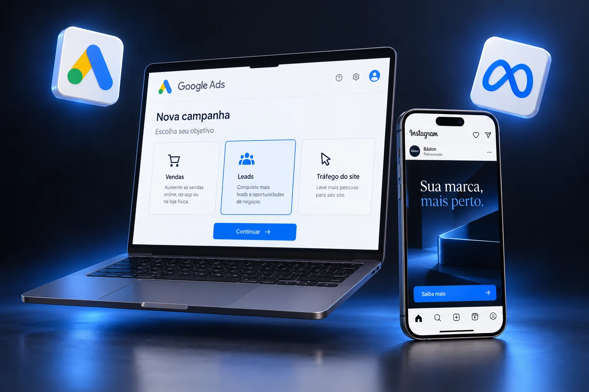

Tráfego pago no Google e no Meta
Campanhas no Google, no Instagram e no Facebook pra gerar oportunidades reais.
- Google Ads pra aparecer pra quem já está procurando o seu serviço
- Anúncios no Instagram e no Facebook
- Acompanhamento das campanhas e dos contatos recebidos